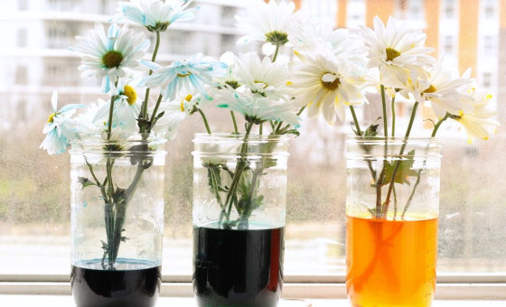

O MUNDO DA NATUREZA
A VIDA
DAS
PLANTAS
DAS
PLANTAS
O crescimento das plantas resulta da absorção de substâncias no ar e do solo num processo chamado fotossíntese.
Os animais não podem realizar este processo, pelo que necessitam de se alimentar de plantas (ou de outros
animais que se alimentem de plantas).
Os animais não podem realizar este processo, pelo que necessitam de se alimentar de plantas (ou de outros
animais que se alimentem de plantas).
FOLHAS

As folhas são como fábricas para as plantas. Nas suas células existem pequenos corpos, os cloroplastos, onde são produzidas susbtâncias orgânicas durante a fotossíntese. ...
Os cloroplastos contêm um pigmento verde, a clorofila, responsável pela cor das plantas. Para realizarem a fotossíntese, as plantas precisam de absorver dióxido de carbono do ar. A água é transportada até às nervuras das folhas por vasos condutores existentes no tronco e nos ramos.
Os cloroplastos contêm um pigmento verde, a clorofila, responsável pela cor das plantas. Para realizarem a fotossíntese, as plantas precisam de absorver dióxido de carbono do ar. A água é transportada até às nervuras das folhas por vasos condutores existentes no tronco e nos ramos.
Na superfície das folhas existem aberturas, os estomas, onde se dão as trocas gasosas e a evaporação da água. As folhas podem apresentar formas muito variadas. Uma observação cuidadosa da forma das folhas e do modo como estão inseridas no pecícolo ajuda-nos a identificar a planta.
FLORES
As flores de uma planta contêm os órgãos reprodutores em que se formam as sementes e a partir das quais cresce uma nova planta. Os órgãos reprodutores estão protegidos pelas pétalas
e pelas sépalas. ...Muitas vezes, as pétalas têm cores vistosas e libertam odores que atraem os insectos, aves e outros animais que desempenham um papel importante na reprodução das plantas.
e pelas sépalas. ...Muitas vezes, as pétalas têm cores vistosas e libertam odores que atraem os insectos, aves e outros animais que desempenham um papel importante na reprodução das plantas.
O CAULE
O caule suporta as folhas e transporta a água das raízes. Contém feixes de tubos chamados vasos condutores. Estes são de dois tipos: o xilema, que transporta a água, e o floema, que transporta substâncias orgânicas. A planta cresce a partir do botão terminal, localizado na extremidade do caule.
RAÍZES
As raízes fixam a planta ao solo e absorvem dele água com sais minerais dissolvidos. Tal como o caule, estas também possuem vasos condutores.Estão cobertas de pêlos radiculares especializados na absorção da água.
Algumas plantas, como a cenoura, o rabanete e o nabo, têm uma raiz principal carnuda, onde a planta armazena nutrientes, rodeada por raízes secundárias mais finas. Outras têm raízes muito ramificadas.
FOTOSSÍNTESE
Processo pelo qual as plantas produzem substâncias orgânicas nas suas folhas. Durante a fotossíntese, a água e o dióxido de carbono são transformados em glicose e oxigénio.... A glicose é utilizada nas funções vitais da planta. Como a planta não precisade todo o oxigénio que produz durante a fotossíntese, liberta-o para a atmosfera.
A energia necessária á fotossintese é captada pelo sol. A clorofila absorve a energia solar e transforma-a em energia química. Esta energia fica acumulada nas susbtâncias orgânicas.
A energia necessária á fotossintese é captada pelo sol. A clorofila absorve a energia solar e transforma-a em energia química. Esta energia fica acumulada nas susbtâncias orgânicas.
AS PLANTAS PRECISAM DE ÁGUA
As plantas necessitam de água para realizar a fotossíntese e para compensar a água que perdem na transpiração. Sem água suficiente, as reações nas células diminuem e as plantas murcham. A água absorvida do solo contém sais minerais que a planta precisa para o seu crescimento.
TRANSPIRAÇÃO E
OSMOSE
OSMOSE
A transpiração consiste na evaporação da água a partir das folhas. À medida que a água se evapora, mais água é absorvida pelas raízes para a subustituir. Este processo é chamado fluxo de transpiração.A água passa através da planta por osmose.
OS ESTÍMULOS DAS
PLANTAS
PLANTAS
As plantas reagem a certos estímulos, como a luz. A planta pode reagir aos estímulos com uma alteração do ritmo de crescimento ou, efectuando movimentos chamados tropismos. ...Fototropismo é o modo como as folhas se orientam para a luz. Hidrotropismo é o modo como as raízes crescem na direção da água.
Geotropismo a forma como crescem no sentido da força da gravidade.
Geotropismo a forma como crescem no sentido da força da gravidade.
PLANTAS PARASITAS
Existem algumas plantas que não produzem o seu próprio alimento. Absorvem as substâncias orgãnicas das plantas sobre as quais vivem. São chamadas parasitas e podem matar o seu hospedeiro.
O visco pode produzir o seu alimento, mas também é capaz de absorver água e susbtãncias orgânicas das árvores em que vive.
A raflésia é uma planta parasita que cresce nas raízes dos cipós nas florestas tropicais. Tem flores gigantes que exalam um odor a putrefação.
PLANTAS INSECTÍVORAS
Algumas plantas que crescem em solos pobres compensam
a falta de nutrientes com a captura de insectos e outros pequenos animais. São, por isso, chamadas plantas insectívoras ou plantas carnívoras.
a falta de nutrientes com a captura de insectos e outros pequenos animais. São, por isso, chamadas plantas insectívoras ou plantas carnívoras.
As folhas das dróseras ou orvalhinhas estão providas de pêlos compridos e glandulosos. Quando um insecto lhes toca, os pêlos curvam-se e prendem-no.
A dioneia ou apanha-moscas tem lâminas foliares munidas de acúleos com que prendem os insectos que nela pousam.
Pode até capturar pequenas râs.
Pode até capturar pequenas râs.
A ascídia captura os insectos no interior de folhas modificadas em forma de jarro. O suco que se acumula no fundo deste recipiente digere os insectos que nele caem.
EXPERIÊNCIA
1. Para testar a reação das plantas aos estímulos coloca alguns feijões secos num frasco. Matém-nos húmidos e, ao fim de uma semana, eles começarão a germinar.

2. Deita o frasco. Ao fim de um dia os rebentos voltam a crescer para cima na direção da luz - fototropismo. As raízes curvam-se para baixo devido ao geotropismo, reação à força da gravidade, e ao hidrotropismo, reação à presença da água.
1. Para veres como as plantas absorvem a água até às suas folhas, coloca flores num frasco com água e tinta. Deixa o frasco e o aipo próximos de uma janela durante algumas horas. Depois, examina as flores.
2. As folhas ficarão coradas da cor que utilizares, o que demostra que a água foi absorvida pela planta. Se fizeres um corte na base do caule verificarás que o xilema (os vasos que transportam a água) ficou também corado.